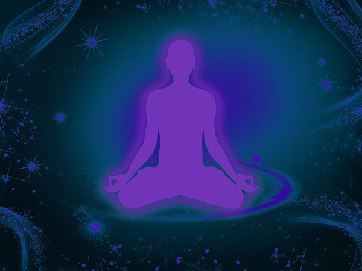

Les 3 corps
Les trois corps sont connus de nombreuses traditions, mais l'homme moderne a surtout connaissance de son corps physique. C'est par le corps physique que nous avons accès au monde matériel et à l'expérience de nos sensations. Il est notre structure dense, solide. Il est en lien avec nos 5 sens.
Il est indissociable de notre corps éthérique, appelé aussi double. C'est lui qui met en mouvement notre corps physique. Il gère la vitalité de notre organisme. Par lui, nous pouvons détecter une faiblesse dans une partie de notre corps, et pouvons donc agir dessus même avant que la maladie se déclare. Le corps éthérique se révèle par le procédé des photos Kirlian, et est visible par certaines personnes.
Le corps émotionnel, ou astral, est le siège de notre vie émotionnelle. Nous expérimentons la vie qu'il véhicule à travers nos émotions comme la peur, la joie, l'angoisse, la colère, tristesse, frustration... Pour l'être humain, ce sont ses émotions qui peuvent lui permettre d'ouvrir son coeur et d'accéder ainsi à la plénitude, la compassion. Le corps astral est de loin le plus puissant: si nous mettons quelques jours à digérer un excès alimentaire, nous pouvons vivre toute une vie avec une émotion non digérée, et cela peut entraîner insomnie, peur systématique, stress... Ce corps mémorise toutes nos expériences, nos vécus émotionnels et, comme les différents corps s'interpénètrent, ses contenus dits négatifs (émotions refoulées, vécus difficiles non clarifiés) vont altérer le corps physique et ainsi occasionner toutes sortes de troubles (maladies, douleurs, malaises etc...) Qui n'a pas connu de mal de ventre, de gorge, ou de sensation de ressèrement dans la poitrine, suite à une émotion? Il devient alors indispensable d'apprendre à nettoyer notre corps astral, d'aller à sa rencontre afin de faire des liens entre nos problèmes d'ordre physique et nos dérèglements émotionnels.
Le corps mental est le siège de nos pensées, nos croyances, nos jugements. C'est ici que s'engramment toutes les idées que nous avons de nous-mêmes et du monde qui nous entoure. Il est comme un moule dans lequel nous évoluons. Il est très puissant et très sollicité dans notre monde occidental. Il nous permet bien sûr d'accéder au savoir, qui, mis au service de la conscience, va nous permettre de décider de notre vie, de faire de bons choix, de bien communiquer et relationner. Malheureusement, il est empli de croyances, pensées, jugements extérieurs à nous-mêmes (éducation, culture, médias..) et bien souvent erronnés Aussi, ce moule devient limitatif et nous empêche d'accéder à la connaissance par le biais de notre propre expérience. Ainsi par exemple, une femme peut s'amputer d'une part essentielle de sa féminité si, enfant elle a associé, par le biais des mots ou vécus de ses parents, la beauté féminine à la bêtise, la faiblesse ou autre. Les répercussions peuvent être multiples, dans ce cas: cancer du sein, de l'utérus, problèmes relationnels, dépression dûe à un assèchement d'une part d'elle même, etc.. Le corps mental est également l'antre de toute notre psyché archétypale, véritable structure de l'être, tout comme le squelette l'est pour le corps physique. Pour l'homme errant d'aujourd'hui, il devient urgent de se rapprocher de ses parts infouies, et ainsi, de se réconcilier avec lui-même.
Il y a d'autres corps énergétiques, que nous n'abordons pas ici car ils ne sont pas utilisés dans le cadre de mes soins.
Noeuds émotionnels
Les noeuds, appelés "JIE" par les chinois, prennent naissance durant la vie foetale. Ils sont constitués à chaque mois de grossesse par la mère, et sont donc au nombre de 9. Plus tard, ils se développent à partir des émotions refoulées ou déniées qui n’ont pas été éliminées par le corps. La germination activée, ils se développent à notre insu, et se nourrissent d'émotions mal gérées et de comportements destructeurs. L'organe concerné va peu à peu perdre de sa vitalité, ce faisant il ne pourra plus remplir correctement ses fonctions organiques au sein du système, et finira par déclencher la maladie.
L'extraction des noeuds émotionnels est une technique chamanique ancestrale qui peut s'apparenter au déracinement d'une mauvaise herbe. C'est une véritable chirurgie karmique. Une fois le noeud retiré, c'est l'énergie d'une huile essentielle choisie par Le SENTI du thérapeute qui cicatrisera et nourrira l'organe malade.
Ceci dit, il sera nécessaire pour la personne de conscientiser sa problématique, d'observer les mécanismes qu'elle a mis en place suite à la formation d'un noeud, et ainsi, de s'en désidentifier et de s'en libérer.
Par exemple, une personne peut se créer un noeud poumon suite à une séparation. Si la tristesse/culpabilité n'a pu être évacuée et transformée, la personne peut se fabriquer une "cuirasse" qui aura pour "avantage" de ne pas sentir, de ne pas contacter ces émotions désagréables, mais qui aura pour inconvénient d'affaiblir son énergie poumon, et, ainsi, elle verra peu à peu les qualités "poumon" se dégrader: cela peut être une baisse du système immunitaire, des problèmes ORL, une mauvaise estime de soi, une difficulté à dire non, ou encore, sur le plan mental, des rigidités et entêtements. Car, si dans nos mentalités occidentales, ces faits n'ont aucun rapport les uns entre les autres, la connaissance de la médecine chinoise vient nous éclairer et nous aider à faire le lien entre nos corps physique, astral (émotionnel) et mental.
Le 3D
Le 3D, ou remote healing, est une technique de soin à distance. Elle utilise le champ morphique de la partie du corps à traiter (voir le travail de Rupert Sheldrake). Nous sommes bien sur le corps mental, car ces champs morpho-génétiques sont des formes-pensées qui contiennent du qi, de l'énergie, et c'est en observant leurs mouvements que vous pouvons libérer la partie à traiter. Il est alors possible de délester le corps mental de cette partie des mémoires d’un choc, d’un stress, d’une toxicité...